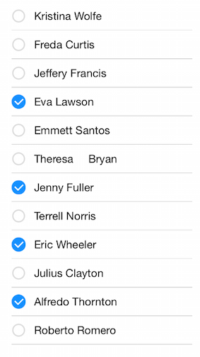

ListView: Getting Started
This quick start tutorial demonstrates how to create a simple iOS application with TKListView.
Prerequisites
This article assumes that you have followed the Downloading UI for iOS, Installing UI for iOS and Setting Up the project steps from the common Getting Started article.
Setting up TKListView
Now that our project is created and the TelerikUI.framework is added, we can start referencing and using the TelerikUI types:
Open your ViewController.m file and add a reference to Telerik UI header file:
#import <TelerikUI/TelerikUI.h>
Note that starting with Xcode 6 Apple doesn’t generate the precompiled headers file automatically. That is why you should add import the UIKit framework before importing TelerikUI:
#import <UIKit/UIKit.h>
If you are writing Swift, add the same line in your bridging header.
In the viewDidLoad method of your view controller prepare a small array of sample data to be presented in TKListView.
Objective-C
[super viewDidLoad];
_sampleArrayOfStrings =@[@"Kristina Wolfe",@"Freda Curtis",@"Jeffery Francis",@"Eva Lawson",@"Emmett Santos", @"Theresa Bryan", @"Jenny Fuller", @"Terrell Norris", @"Eric Wheeler", @"Julius Clayton", @"Alfredo Thornton", @"Roberto Romero",@"Orlando Mathis",@"Eduardo Thomas",@"Harry Douglas"];
Swift
super.viewDidLoad()
self.sampleArrayOfStrings = ["Kristina Wolfe","Freda Curtis","Jeffery Francis","Eva Lawson","Emmett Santos", "Theresa Bryan", "Jenny Fuller", "Terrell Norris", "Eric Wheeler", "Julius Clayton", "Alfredo Thornton", "Roberto Romero","Orlando Mathis","Eduardo Thomas","Harry Douglas"]
Next, create an instance of TKDataSource. This components is used to feed our data to TKListView.
Objective-C
_dataSource = [[TKDataSource alloc] initWithArray:_sampleArrayOfStrings];
Swift
dataSource = TKDataSource(array:sampleArrayOfStrings)
Then create a new instance of TKListView and add it as a subview of the ViewController’s main view. The autoresizingMask property is set in order to allow correct resizing of the list view when the device is rotated in landscape mode.
Objective-C
TKListView *_listView = [[TKListView alloc] initWithFrame: CGRectMake(20, 20, self.view.bounds.size.width-40,self.view.bounds.size.height-40)];
_listView.autoresizingMask = UIViewAutoresizingFlexibleWidth | UIViewAutoresizingFlexibleHeight;
_listView.dataSource = _dataSource;
[self.view addSubview:_listView];
Swift
let listView = TKListView(frame: CGRectMake(20, 20, self.view.bounds.size.width-40,self.view.bounds.size.height-40))
listView.dataSource = dataSource
self.view.addSubview(listView)
So far we have got the following view:

Now lets enable multiple selection:
Objective-C
_listView.allowsMultipleSelection = YES;
Swift
listView.allowsMultipleSelection = true
To see the result, after running this sample, select to select a few items: 
Adding a single line of code should allow the user to reorder items by dragging a handle.
Objective-C
_listView.allowsCellReorder = YES;
Swift
listView.allowsCellReorder = true;

And here is the full code of our view controller
Objective-C
#import "ViewController.h"
#import <TelerikUI/TelerikUI.h>
@implementation ViewController
{
NSArray *_sampleArrayOfStrings;
TKDataSource *_dataSource;
}
- (void)viewDidLoad
{
[super viewDidLoad];
_sampleArrayOfStrings =@[@"Kristina Wolfe",@"Freda Curtis",@"Jeffery Francis",@"Eva Lawson",@"Emmett Santos", @"Theresa Bryan", @"Jenny Fuller", @"Terrell Norris", @"Eric Wheeler", @"Julius Clayton", @"Alfredo Thornton", @"Roberto Romero",@"Orlando Mathis",@"Eduardo Thomas",@"Harry Douglas"];
_dataSource = [[TKDataSource alloc] initWithArray:_sampleArrayOfStrings];
TKListView *_listView = [[TKListView alloc] initWithFrame: CGRectMake(20, 20, self.view.bounds.size.width-40,self.view.bounds.size.height-40)];
_listView.autoresizingMask = UIViewAutoresizingFlexibleWidth | UIViewAutoresizingFlexibleHeight;
_listView.dataSource = _dataSource;
_listView.allowsMultipleSelection = YES;
_listView.allowsCellReorder = YES;
[self.view addSubview:_listView];
}
Swift
class ViewController: UIViewController {
var dataSource: TKDataSource?
var sampleArrayOfStrings: NSArray = []
override func viewDidLoad() {
super.viewDidLoad()
self.sampleArrayOfStrings = ["Kristina Wolfe","Freda Curtis","Jeffery Francis","Eva Lawson","Emmett Santos", "Theresa Bryan", "Jenny Fuller", "Terrell Norris", "Eric Wheeler", "Julius Clayton", "Alfredo Thornton", "Roberto Romero","Orlando Mathis","Eduardo Thomas","Harry Douglas"]
dataSource = TKDataSource(array:sampleArrayOfStrings)
let listView = TKListView(frame: CGRectMake(20, 20, self.view.bounds.size.width-40,self.view.bounds.size.height-40))
listView.dataSource = dataSource
listView.allowsMultipleSelection = true
listView.allowsCellReorder = true;
self.view.addSubview(listView)
}
}